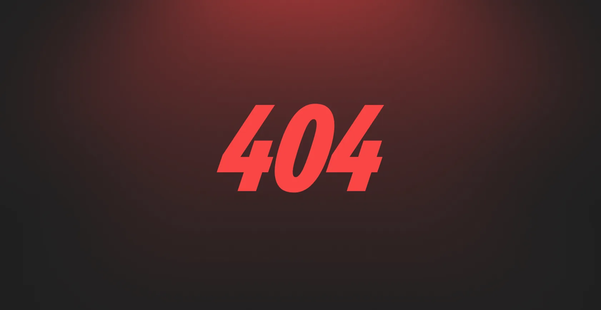
Каждый месяц Яндекс Играми пользуются 45 миллионов человек: они запускают игры, пробуют новые фичи, проходят через разные продуктовые сценарии. В этих сценариях я помогаю делать коммуникации не только понятными, но и живыми, с характером
Задача
Переписать экраны, которые видит игрок вместо удалённого или закрытого профиля
Что сделал
Убрал шаблонность из текстов. А для скрытого профиля предложил полезный следующий шаг — добавить игрока в друзья
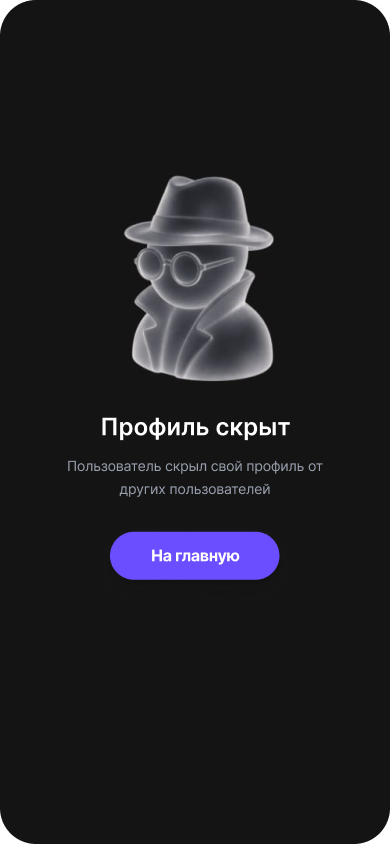
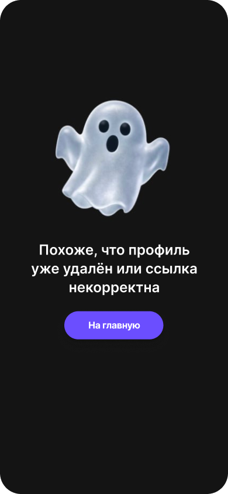
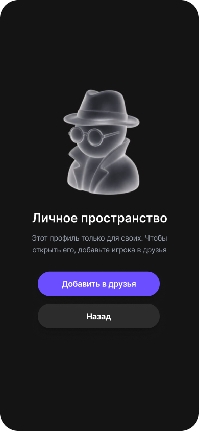
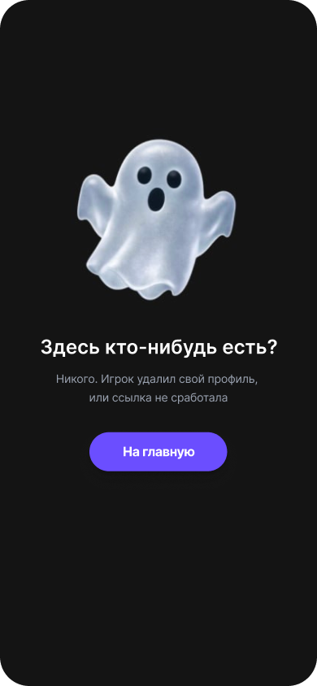
На мировом рынке сервис Яндекс Игры работает под брендом Yango Games.
Если модераторы удаляют игру с платформы или переносят, пользователь попадает на страницу ошибки 404
Задача
Придумать нешаблонную страницу 404, которая оставит пользователя на платформе
Что сделал
Представил, что 404 — это секретный уровень, который открывают только избранные. На странице мы поздравляем игрока и уводим на главный экран
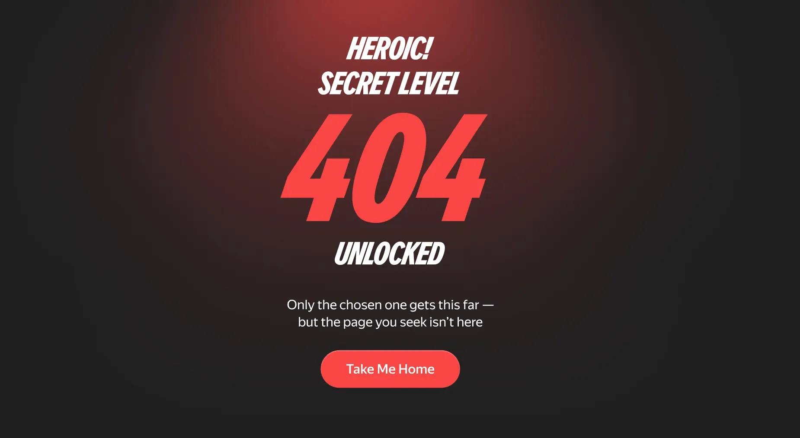
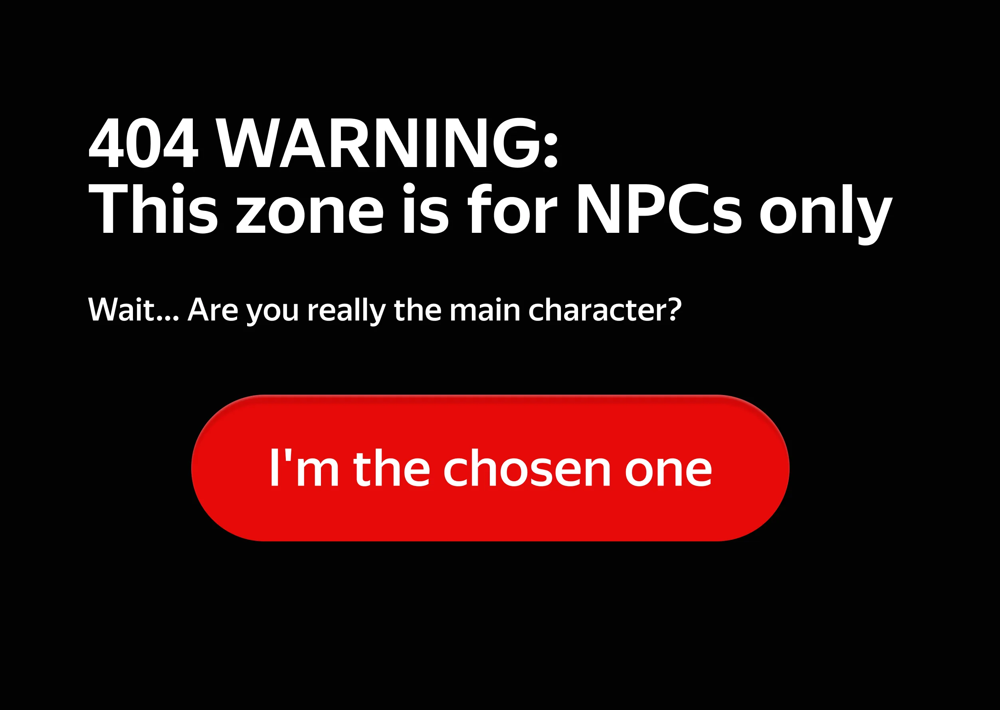
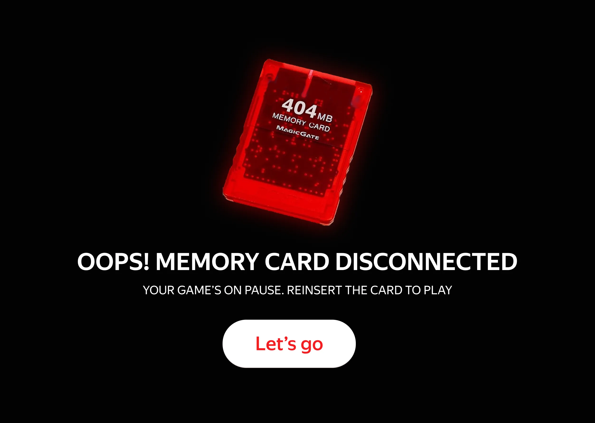
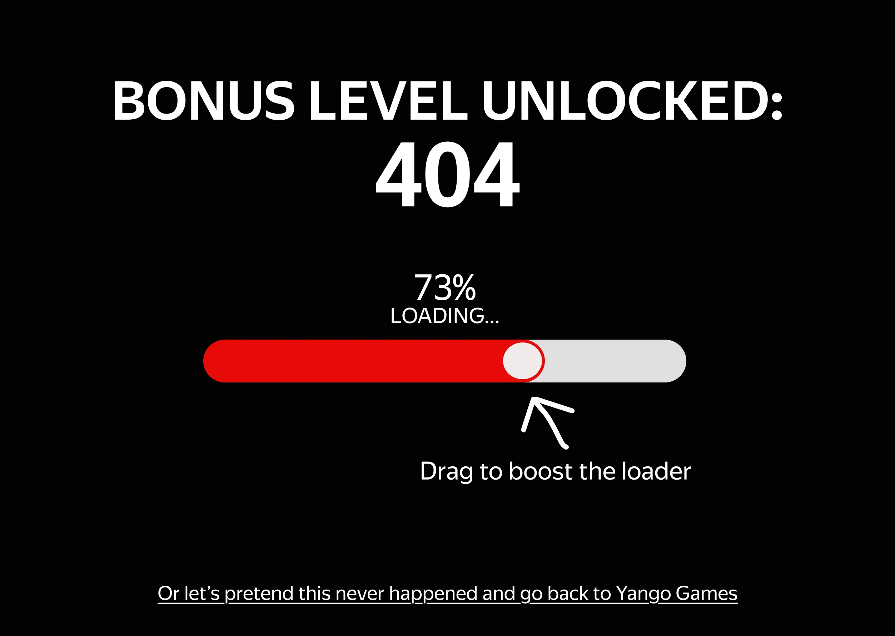
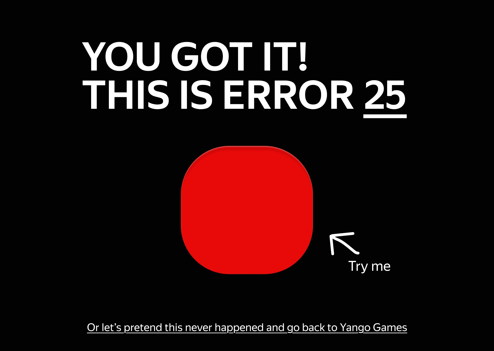
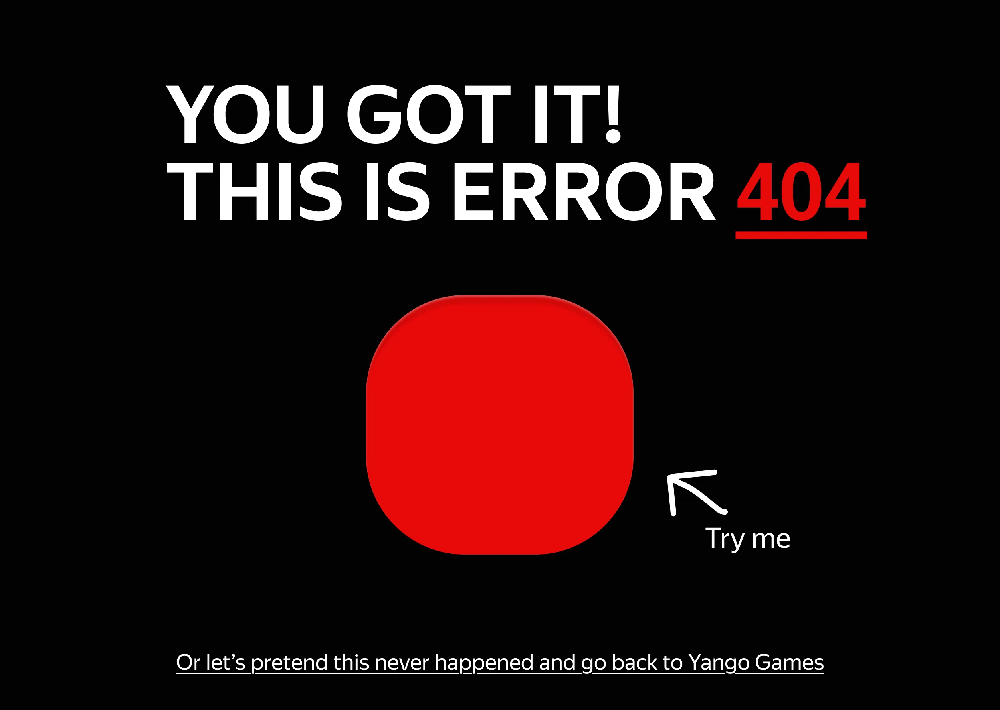